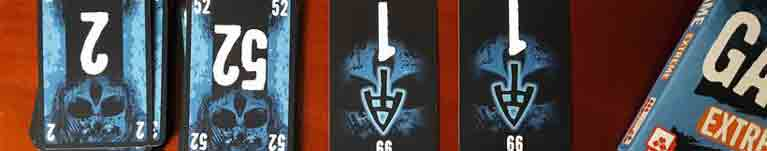
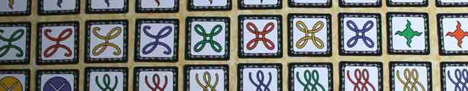
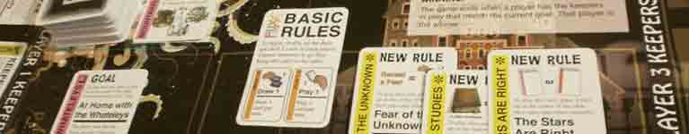

Ecco, è estate. Sapete benissimo cosa questo significa.
Montagne di tempo a disposizione.
Sabati sera infiniti allo scintillare di un bar fuori mano, luminosi, liberi, puri.
Drink e parole spensierate, frasi dette gridando sotto una coperta di musica frizzante, con gente inaspettata e fresca, che non si conosceva prima. E nuove occasioni per mettersi in gioco e vivere qualche avventura, senza pensare a nulla...
Per dirla con poche parole: una cosa terribile.
Pensateci!
Niente partitona pomeridiana al Trono di Spade, con i suoi due ore e mezza di intavolatura.
Niente week-end a tema Caccia all'Anello, giocato in tempo reale con tutta la Trilogia del Signore degli Anelli ad accompagnarlo.
Niente cinghiali freschi da sviscerare, niente sabato sera monastico ad analizzare pagine e pagine di regole e regolette, niente german spoglissimi e grezzoni con cui sognare di essere un ingegnere industriale o un mercante di spezie.
No, partner, amici e società tutta sono concordi: d'Estate non si può; d'Estate si fa la valigia, si esce e si va al mare. Con tutto quello che ciò implica.
Sole, che scolorisce i tabelloni e le tessere e dona loro quell'inguardabile look vetrina-di-libreria-che-vende-anche-Risiko.
Sabbia, che si infila dappertutto e la si trova nelle bustine dell'Unione Sovietica mentre a Natale si rispolvera il caro Twilight Struggle per la partita con la nonna (bravissima, perché all'epoca di Stalin lei c'era).
Acqua di mare, crema solare e sudore, che lasciano macchiette dappertutto e che con la loro umidità scendono terribili sulle carte da gioco, un po' come il pallone del gruppo di ragazzini sui seicento e passa componenti del vostro piazzamento lavoratori.
In una situazione del genere, neanche improvvisare una sessione a un gioco di ruolo come Dungeons & Dragons o Cani nella Vigna funziona, perché i dadi tendono ad affondare nella sabbia invece che a rollare, e se non tenuti d'occhio c'è sempre il rischio che se li freghi qualche bambino tedesco per esibirli come trofeo di caccia al prossimo Essen.
Che fare allora, in una situazione così disperata?
Un giocatore sprovveduto, si risolverebbe riluttante a vegetare brontolando nel suo cono di ombra, alzandosi solamente per spostare la sdraio seguendo la meridiana dell'ombrellone, aspettando stoicamente la fine di tutto quel dolore e frustrazione.
Non così il giocatore furbo!
Invece quel giocatore, che legge il nostro blog tutte le settimane, sa benissimo che anche di fronte ad un ambiente così ostile è sempre possibile trovare l'occasione per propinare al proprio gruppone di villeggianti qualche bel gioco da tavolo.
Non è cosa semplice da fare, ovviamente. Occorre una buona dose di preparazione e di forza di volontà. Non si può andare a casaccio: i giochi devono tutti essere scelti con cura e devono essere logisticamente appropriati. Questo significa, essenzialmente, che i giochi in questione dovranno essere brevi, portatili e immediatamente coinvolgenti (che ci volete fare, qualche volta tocca scendere a compromessi, pur di avere la propria dose).
Qui di seguito troverete un esempio di quello che intendiamo: un'intera settimana di gioco cui ispirarsi per le vostre vacanze al mare e per salvare i vostri amici dalla follia in cui, senza saperlo, stanno andando ad infilarsi.

La prima cosa a cui dovrete pensare appena arrivati in hotel col vostro gruppo è, ovviamente, stabilire quale sarà il tono della vacanza.
Per questo, appena arrivati di fronte al bancone per ritirare le vostre chiavi e farvi controllare i documenti, tirate fuori tutta la vostra determinazione e sbattete sul tavolo una copia di The Game. Questo non solo servirà a stabilire la vostra posizione di esemplare dominante all'interno del vostro branco di pallidoni, ma comunicherà a tutti i presenti che: 1) il loro destino è già stato deciso e 2) che se la sono cercata loro.
Sulle prime, potrebbero protestare. Qualcuno sicuramente si ribellerà, avanzando propositi di passare delle “vacanze eccitanti” o “almeno normali”. È normale: i deboli sono sempre quelli che più facilmente si piegano alla tentazione.
Ma voi sapete cosa è meglio per loro.
E così, di fronte alle scenate del vostro immancabile amico festaiolo, voi calerete la vostra mano pesante ancora una volta sul tavolo. Questo sarà sufficiente a far cessare ogni lamentela, e porterà l'attenzione di tutti su quello che veramente conta, cioè il gioco stesso.
Immaginate allora i loro sorrisi compiaciuti quando vi vedranno apparecchiare sulle sdraio i tipici plichi di carte col teschio di questo popolare gioco cooperativo, eterno memento della vanità delle loro esistenze. Fidatevi, friggeranno di delizia nello scoprire che, invece che con quel gruppo di olandesine col bikini rarefatto che ha cercato di approcciarvi in spiaggia, passeranno il tempo a ordinare quattro mazzi di carte numerate da 1 a 100 in ordine crescente o decrescente senza potersi accordare su quale carta calare di preciso, e se no si perde tutti insieme.
Mentre guarderanno i vostri vicini di ombrellone sacrificarsi per fare quella partita a pallavolo con le sopra dette ragazze al posto vostro, così salvandovi da una certissima umiliazione sportiva, senza dubbio vi ringrazieranno e vedranno in voi il salvatore di cui avevano bisogno.

A questo punto, l'ordine di beccata sarà chiaro a tutti. Dopo aver compreso che le azioni del giorno prima sono state volte a creare coesione nel gruppo, coinvolgendolo come un singolo organismo verso un obiettivo comune con poste in gioco altissime, i vostri amici avranno riconosciuto in voi il leader indiscusso della vacanza. Si aspetteranno quindi che sappiate donare loro un proposito anche per il secondo giorno d'ombrellone, e magari un modo per tenersi in allenamento contro i pericoli del mondo esterno.
Questo, naturalmente, deve comprendere una componente fisica, oltre che mentale: ieri l'avete scampata con quel gruppo di pallavoliste losche, ma solo perché qualcuno è entrato nella mischia al posto vostro. Avete avuto fortuna, diciamocelo. Ma se si dovesse giungere alle mani? Dovrete tutti essere in grado di difendevi da soli.
Jungle Speed è il tipo di allenamento completo di cui avete bisogno: figuratevi un totem ligneo (o di polimeri plastici, se avete avuto l'accortezza di portare la versione da spiaggia di questo gioco) piazzato nel mezzo del cerchio magico che andrete a formare tra voi compari a bordo spiaggia. Ciascuno di voi sarà dotato di un plico di carte coperte, la cui faccia recherà ogni volta un disegno particolare. Uno alla volta, girerete tutti una carta dalla cima e, qualora due persone ottengano lo stesso disegno, dovranno fiondarsi sul totem per farlo proprio e assicurarsi di non pagar pegno.
Mentre giocate, osservate i vostri sottoposti: notate la soddisfazione nei loro occhi, nascosta dietro quel ciglio abbassato? Vedete come ogni tanto buttano un occhio al mare e alle ragazze, senza dubbio con la mente carica di disprezzo? I loro sbuffi di concentrazione sottolineano che state andando alla grande.
Dopo una decina di ore di questo rito, variato dall'occasionale carta che cambia le regole del gioco, ne uscirete forti e estremamente attenti. Prontissimi a stanare ogni possibile predatore nell'ambiente sabbioso e traditore del Lido di Jesolo. Vi sentirete forse già dei guerrieri del Ferragosto, ma non illudetevi: la strada da qui a domenica è ancora lunga.

Siete soldati dello sdraio, siete un gruppo di marò spiaggiati, intonsi e lattei come la più pura delle fanciulle. Il vostro petto scintilla al sole e abbaglia ogni villeggiante: fa loro capire che con voi non c'è da scherzare, e per questo andate avanti a testa alta.
Normalmente, il pallore vampirico è la forza e l'orgoglio di ogni giocatore. Ma voi, voi generalissimi del bagnasciuga, che la sapete più lunga degli altri, sapete anche che proprio quel marchio che vi contraddistingue e vi fa risaltare su tutti, in questo luogo infausto, potrebbe essere la vostra rovina.
Per questo, la giornata del mercoledì dovrà iniziare con un solenne giuramento. Radunate in un bar ben popolato il vostro battaglione per colazione e offrite loro un calice di un drink appropriato per i voti formali (un Rum&Cola va benissimo). Parlate loro dicendo che, dopo le prove dei primi due giorni, è arrivata l'ora di andare oltre: voi e i vostri camerati dovrete brindare al grande martirio che affronterete tutti insieme, per il vostro bene.
Perché questo giorno sarà dedicato a sbarazzarvi delle vostre vesti bianche, per indossare quelle del nemico, e mimetizzarvi così tra la folla dei bagnanti. Vi piazzerete al sole, rigorosamente senza alcuna protezione, fino a quando sarà necessario.
I vostri amici-esercito potrebbero versare qualche lacrima: sicuramente non si aspettavano, prima di partire, di dover affrontare una simile ordalia. Ma rassicurateli: ovviamente, l'impresa è ardua, molto ardua. Qualcuno potrebbe soccombere, senza un qualche sostegno psicologico. Però anche a questo voi, dovete dire, ci avete già pensato.
7Rosso è quello che fa al caso vostro: non solo il gioco è straordinariamente divertente, ma le carte (disponibili in sette diversi colori per ciascun giocatore) sono perfette per essere comparate al tono raggiunto dalla vostra epidermide. Durante il gioco, avrete l'obiettivo di battere tutti gli altri giocatori secondo la regola vigente dettata dal colore attivo tra i sette disponibili. Nel vostro turno potrete quindi giocare una o due carte per essere il giocatore che meglio soddisfa tale obiettivo o per cambiarlo secondo i dettami di un nuovo colore e, se nessuna di queste due possibilità sarà possibile, uscirete dal gioco.
A fine serata, quando il sole sarà tramontato e avrete raggiunto lo stesso colore che dà nome al gioco, rammentate di premiare il giocatore che ha ottenuto più vittorie con una bella pacca sulla spalla.
Siete ormai giocatori di terra e, se il volo inaugurale che i vostri amici vi hanno fatto fare dalla finestra questa notte (sicuramente per un eccesso di fiducia nei vostri confronti) non vi ha spaventato, siete ormai anche guerrieri dell'aria. L'unica cosa che vi manca, a questo punto, è una congrua preparazione nell'arte della battaglia navale.
Radunate i vostri amici sul bagnasciuga non appena si sarà fatta alba. Lo scopo sarà duplice: rinfrancare loro lo spirito in vista dell'impresa che vi attende, e piangere i vostri colleghi del primo giorno, che dopo essere stati presi dalle olandesi non si sono più visti (non ascoltate il soldato semplice malinformato che parla di averli visti partire in automobile: è senza dubbio tutta propaganda e disinformazione ad opera del nemico).
Passate le formalità del caso, minuti di silenzio, encomi postumi, ecc... sarà tempo di passare alle cose concrete: il vostro vascello, la “pedalò-12 Lido dei Pompelmi”, è pronto per accogliervi.
Per dare motivazione ai vostri sodali, informateli che al largo è stata avvistata un'altra simile imbarcazione ricolma delle vedove nere dello scorso lunedì: questo senza dubbio li spaventerà, ma vedrete comunque in loro accendersi come una scintilla di folle desiderio di battaglia. Proprio quello che fa al caso vostro.
Pedalate con la vostra truppa fino ad arrivare al largo, oltre le boe e gli scogli e i cartelli di pericolo, dove nuotano i pesci grossi.
Lì tirerete fuori la prossima parte dell'addestramento: la ittica custodia del gioco chiamato Happy Salmon. Mettete in cerchio i vostri amici nel mezzo metro quadrato del pontile della vostra nave: date a ciascuno uno dei mazzetti colorati del gioco e istruiteli a girarne una carta alla volta. Ogni carta, che reca una particolare movenza bellica (un pugno-a-pugno, uno schiaffo a cinque dita, uno scambio di posto fulmineo e la leggendaria “mossa del salmone”), dovrà essere eseguita con un altro dei partecipanti, attirandone l'attenzione prima che egli faccia la stessa cosa con uno degli altri, e così ripetendo fino all'esaurimento del mazzo.
Per motivare i vostri militi a dare il massimo, variate il gioco standard spingendo il perdente con più carte fuori dal perimetro di gioco, proprio dove stanno gli squali.
A mezzanotte, sfoltiti i ranghi dai più inadatti alla sopravvivenza, sarà tempo di grandi annunci: venerdì sarà il giorno del battesimo del fuoco.
A questo punto, vi sarete già curati di aver approcciato il nemico per stabilire un luogo mutualmente accettato per la vostra battaglia. Dite alle olandesi che vi vedrete nel cortile del vostro hotel, alle nove di sera, e che avete in programma per loro una notte che non dimenticheranno mai.
Comunicate ai pellerossa che albergano nella vostra stanza quanto avete fatto. Nei loro occhi smorti vedrete riaccendersi la fiamma dello scontro. Mentre, dopo una giornata di meritato riposo, li osserverete curare le loro uniformi (toeletta rinfrescante, t-shirt sgargiante intimidatrice, gel per trasformare i capelli in armi perforanti, e tutto il resto) sgusciate fuori dalla stanza e nel cortile. Lì, preparate una tavola e imbanditela con Cocorido, l'adattamento italiano del celebre Cards Against Humanity. Il gioco funziona in questo modo: ogni giocatore riceve undici carte bianche (o meno, se desiderate) ciascuna con scritta una parola di indubbio valore intellettuale (vi incoraggiamo a cercare da soli qualche esempio più concreto). Il giocatore di turno, dunque, rivela da un mazzo apposito una carta nera, contenente una frase incompleta o una domanda cui rispondere giocando una o più carte. Ogni altro giocatore seleziona una carta dalle proprie, ponendola coperta in una pila con le altre. Il giocatore di turno le mescola e le legge una alla volta, usandole per completare la carta nera. Assegnando un punto a quella che, a suo giudizio, risulta la più divertente.
Almeno, questo è quello che si dovrebbe fare normalmente. Ma voi siete uomini con una missione e da voi dipende la buona salute del vostro reparto. Quindi, prima della partita, leverete tutte le carte che il volgo comune giudica “spiscianti” e lascerete solo quelle che l'editore ha inserito per sbaglio, come “Soweto”, “La Certificazione ISO 9001” e “Raimondo Vianello”. Punti bonus se le restanti sono tutti riferimenti nazional-popolari che solo un italiano medio potrebbe capire.
Non comunicate questa cosa ai vostri soldati: desiderano già da soli mostrare la propria serietà e sobrietà guerriera, e si sentirebbero sminuiti a sapere che voi avete facilitato loro la vita preselezionando le risposte migliori.
Dopo un'oretta di aspra battaglia, nel più teso e rumoroso silenzio che abbiate mai visto, vedrete finalmente le olandesine battere in ritirata, stanche e abbattute e del tutto convinte di starvi alla larga. Non sorprendetevi degli sguardi nuovamente spenti dei vostri amici: la tensione e la ritrovata serenità dopo la fine della guerra tende a lasciare ferite profonde e a volte non rimarginabili, è cosa normale.
Offrite loro qualcosa di alcolico. Servirà a tutti per rinfrancare lo spirito in questo giorno di festa.
Nulla è più devastante della calma dopo la tempesta. I vostri amici, quei patrioti valorosi, lo sanno bene. Lo hanno provato sulla loro pelle. Adesso hanno bisogno di riposo.
Il vostro sabato sera sarà breve, tranquillo e terapeutico.
Prendete uno dei vostri co-villegganti e appartatevi in un tavolino del bar dell'albergo. Tirate fuori Patchwork e iniziate la sessione riabilitativa.
Il gioco è stato studiato apposta dal famoso dott. Rosenberg per persone bisognose di ritrovare la serenità. Il tabellone, che riconnette i giocatori alla loro infanzia per la somiglianza con il classico Gioco dell'Oca, deve essere percorso senza dadi, quindi lasciando al paziente il controllo totale sulle proprie azioni (in opposizione agli obblighi deformanti della guerra). Il movimento si effettua principalmente acquistando tessere di diverse dimensioni, a guisa di pezze di stoffa, da collocare su una plancia personale per formare un ricamo ordinato e colorato, una coperta soffice, che ricorda quella che le loro nonne cucivano sulla loro sedia a dondolo. Per gli sforzi nella riabilitazione, il giocatore è premiato, a seconda delle tessere, con un certo numero di bottoni. Lo scopo è accumulare questi bottoni per accumulare altrettanti punti, dai quali però vanno sottratti due punti per ogni spazio lasciato vuoto sulla plancia (tutto questo per non illudere l'assistito che la vita sia tutta rose e fiori, e per fargli capire che non lo state assecondando nella sua ritrosia), cercando di superare l'avversario.
Fate giocare tutti i vostri amici, uno alla volta. Aiutateli con le mosse, se il loro stato catatonico glielo impedisce.
Dopo ogni partita, ricordate che la mattina seguente sarà tutto finito, e che lunedì finalmente potranno tornare alle loro normali vite di lavoratori e studenti stressati, come è giusto che sia.

Quando anche l'ultimo dei vostri degenti sarà stato esaminato, sarà ormai passata la mezzanotte. Il cielo sarà nero di nuvole, non ci sarà nemmeno uno spicchio di luna ad illuminare il vostro piccolo rifugio di mare.
Quella sarà l'ora propizia.
Voi radunerete tutti in una stanza, meglio se piccola, meglio se spoglia e ammuffita. Li metterete attorno a voi, a sedere, senza dire nulla, ma con aria solenne. Dalle vostre tasche, estrarrete un piccolo pacchetto, un gioco dal nome Fluxx Cthulhu, sulla cui copertina stanno figure aberranti del mondo al di là del mondo.
Tre carte a testa. Se ne pesca una, se ne gioca una. Queste sono le regole dell'ultimo gioco che farete. Sempre che le regole non cambino.
Per ogni carta che giocherete, qualcosa del gioco muterà. Il massimo di carte in mano, le carte da giocare, persino le modalità di vittoria. Giocherete fino all'ora del check-out, piazzando davanti a voi effigi di creature impossibili, follia fatta carne, e mostri più antichi dell'universo stesso. Giocherete in silenzio, senza ridere o piangere, solo giocando carte ancora e ancora, fino a quando accadrà l'inevitabile. Qualcuno giocherà una carta dal bordo rosso, le temibili carte il cui nome nella lingua proibita è “ungoal”, che portano tutti alla sconfitta se ne vengono realizzati i requisiti.
E qualcuno li realizzerà. E tutti perderanno desolatamente, muti e immobili come le salme rossastre che saranno diventati, senza spirito o volontà di opporsi al loro terribile destino, che era stato segnato fin dall'inizio. E vedrete qualcosa separarsi per sempre dalle loro anime.
Sarà allora, unico tra tutti dal folle sorriso di giocatore inveterato, che avrete capito di aver realizzato la vacanza perfetta.
Alla fine, guardando i vostri amici fissare il vuoto fuori dal finestrino dell'auto qualche ora più tardi, con occhi che hanno visto ciò che nessun uomo dovrebbe mai vedere, vi sarete resi conto che è andata meglio del previsto. “È proprio vero!” penserete tra voi e voi, “anche una vacanza al mare può diventare splendida, se solo ci si mette un po' di impegno e pianificazione”.
Disclaimer: ovviamente, avrete capito anche voi che questo articolo è abbondantemente satirico. La cosa è stata in fin dei conti una scelta obbligata: moltissimi siti che si occupano del nostro hobby, arrivata l'estate, si affannano sempre per consigliare giochi da portare al mare per passare del tempo sotto l'ombrellone... e in genere è tutta una corsa a chi è più originale. La verità è che, in villeggiatura, non sono tante le occasioni per giocare da tavolo, a meno che non partiate con qualcuno che preferisce lo stare sotto l'ombrellone al racchettare a bordo spiaggia (esemplari magnifici, ma anche abbastanza rari) e in quel caso, di fatto, finirete col giocare comunque allo stesso gioco per tutta la vacanza (magari uno di quelli di cui sopra, o magari anche solo a briscola o a Uno). Tirando le somme, quindi, prendetela un po' come vi pare, e non arrovellatevi troppo su cosa portarvi dietro: sarete tanto rilassati da non farci caso. Se tutto questo non vi soddisfa e volete un'imbeccata a tutti i costi, allora il mio consiglio è mollare tutto e andare in montagna: fidatevi giocare a Fields of Green in malga col pastore e le sue pecore è una esperienza che difficilmente si può battere, e non ci sono olandesi che tengano.